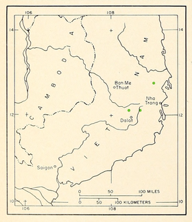

1. Đặc điểm hình thái
Cây gỗ to, có tán hình ô, cao 30 – 35 m, đường kính thân đến 0,7 m, cá biệt có khi đến gần 2m. Gốc có bạnh. Vỏ cây già màu nâu hồng, bong thành mảng không đều, có nhựa. Mỗi cành ngắn mang 2 lá. Tất cả đều tập trung thành túm nhỏ ở đầu cành. Đặc điểm đặc trưng nhất là lá hình dải mác nhọn đầu, dẹp. Do tính chất bất thường này (lá dẹp), nên nó được đặt trong phân đoạn riêng của chính nó, gọi là Krempfianae[4]. Lá cành non dài 10 – 16 cm, rộng 6mm, to hơn lá của cành trưởng thành, dài 4 – 7 cm, rộng 2 - 4mm.
Nón đơn tính, nón đực hình trụ, nón cái mọc đơn độc, hướng xuống dưới, hình trứng, dài 4 – 9 cm, rộng 3 – 8 cm. Khi chín các vảy nón không mở hết đến gốc như thông hai lá hoặc thông ba lá. Mặt vảy lồi, hình thoi với một dường ngang lồi ở giữa, rố mặt vẩy hơi lồi. Hạt nhỏ, hình bầu dài, có cánh tròn ở đầu, tất cả dài 2,5 cm.
2. Phân bố
Loài đặc hữu của Việt Nam, mới chỉ gặp ở điểm lấy mẫu chuẩn thuộc tỉnh Khánh Hoà (Ninh Hòa: núi Vọng Phu), Lâm Đồng (Lạc Dương: suối Vàng, Đơn Dương; đèo Ngoạn Mục).
